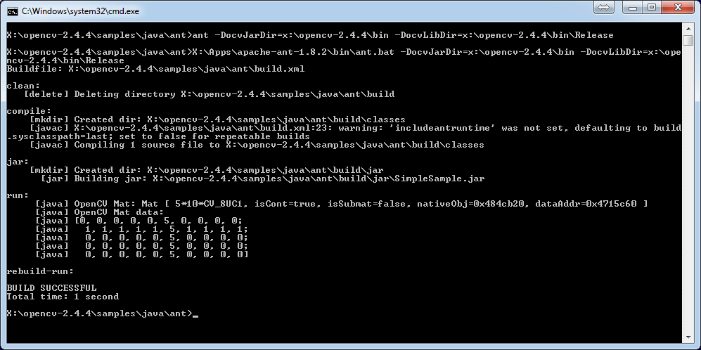

Introduction to Java Development
As of OpenCV 2.4.4, OpenCV supports desktop Java development using nearly the same interface as for Android development. This guide will help you to create your first Java (or Scala) application using OpenCV. We will use either Apache Ant or Simple Build Tool (SBT) to build the application.
If you want to use Eclipse head to Using OpenCV Java with Eclipse. For further reading after this guide, look at the Introduction into Android Development tutorials.
What we’ll do in this guide
In this guide, we will:
- Get OpenCV with desktop Java support
- Create an Ant or SBT project
- Write a simple OpenCV application in Java or Scala
The same process was used to create the samples in the samples/java folder of the OpenCV repository, so consult those files if you get lost.
Get proper OpenCV
Starting from version 2.4.4 OpenCV includes desktop Java bindings.
Download
The most simple way to get it is downloading the appropriate package of version 2.4.4 or higher from the OpenCV SourceForge repository.
Windows users can find the prebuilt files needed for Java development in the opencv/build/java/ folder inside the package. For other OSes it’s required to build OpenCV from sources.
Another option to get OpenCV sources is to clone OpenCV git repository. In order to build OpenCV with Java bindings you need JDK (Java Development Kit) (we recommend Oracle/Sun JDK 6 or 7), Apache Ant and Python v2.6 or higher to be installed.
Build
Let’s build OpenCV:
git clone git://github.com/opencv/opencv.git cd opencv git checkout 2.4 mkdir build cd build
Generate a Makefile or a MS Visual Studio* solution, or whatever you use for building executables in your system:
cmake -DBUILD_SHARED_LIBS=OFF ..
or
cmake -DBUILD_SHARED_LIBS=OFF -G "Visual Studio 10" ..
When OpenCV is built as a set of static libraries (-DBUILD_SHARED_LIBS=OFF option) the Java bindings dynamic library is all-sufficient, i.e. doesn’t depend on other OpenCV libs, but includes all the OpenCV code inside.
Examine the output of CMake and ensure java is one of the modules “To be built”. If not, it’s likely you’re missing a dependency. You should troubleshoot by looking through the CMake output for any Java-related tools that aren’t found and installing them.

If CMake can’t find Java in your system set the JAVA_HOME environment variable with the path to installed JDK before running it. E.g.:
export JAVA_HOME=/usr/lib/jvm/java-6-oracle cmake -DBUILD_SHARED_LIBS=OFF ..
Now start the build:
make -j8
or
msbuild /m OpenCV.sln /t:Build /p:Configuration=Release /v:m
Besides all this will create a jar containing the Java interface (bin/opencv-244.jar) and a native dynamic library containing Java bindings and all the OpenCV stuff (lib/libopencv_java244.so or bin/Release/opencv_java244.dll respectively). We’ll use these files later.
Java sample with Ant
The described sample is provided with OpenCV library in the opencv/samples/java/ant folder.
Create a folder where you’ll develop this sample application.
In this folder create the
build.xmlfile with the following content using any text editor:<project name="SimpleSample" basedir="." default="rebuild-run"> <property name="src.dir" value="src"/> <property name="lib.dir" value="${ocvJarDir}"/> <path id="classpath"> <fileset dir="${lib.dir}" includes="**/*.jar"/> </path> <property name="build.dir" value="build"/> <property name="classes.dir" value="${build.dir}/classes"/> <property name="jar.dir" value="${build.dir}/jar"/> <property name="main-class" value="${ant.project.name}"/> <target name="clean"> <delete dir="${build.dir}"/> </target> <target name="compile"> <mkdir dir="${classes.dir}"/> <javac includeantruntime="false" srcdir="${src.dir}" destdir="${classes.dir}" classpathref="classpath"/> </target> <target name="jar" depends="compile"> <mkdir dir="${jar.dir}"/> <jar destfile="${jar.dir}/${ant.project.name}.jar" basedir="${classes.dir}"> <manifest> <attribute name="Main-Class" value="${main-class}"/> </manifest> </jar> </target> <target name="run" depends="jar"> <java fork="true" classname="${main-class}"> <sysproperty key="java.library.path" path="${ocvLibDir}"/> <classpath> <path refid="classpath"/> <path location="${jar.dir}/${ant.project.name}.jar"/> </classpath> </java> </target> <target name="rebuild" depends="clean,jar"/> <target name="rebuild-run" depends="clean,run"/> </project>
This XML file can be reused for building other Java applications. It describes a common folder structure in the lines 3 - 12 and common targets for compiling and running the application. When reusing this XML don’t forget to modify the project name in the line 1, that is also the name of the main class (line 14). The paths to OpenCV jar and jni lib are expected as parameters (“${ocvJarDir}” in line 5 and “${ocvLibDir}” in line 37), but you can hardcode these paths for your convenience. See Ant documentation for detailed description of its build file format.
Create an
srcfolder next to thebuild.xmlfile and aSimpleSample.javafile in it.Put the following Java code into the
SimpleSample.javafile:import org.opencv.core.Core; import org.opencv.core.Mat; import org.opencv.core.CvType; import org.opencv.core.Scalar; class SimpleSample { static{ System.loadLibrary(Core.NATIVE_LIBRARY_NAME); } public static void main(String[] args) { System.out.println("Welcome to OpenCV " + Core.VERSION); Mat m = new Mat(5, 10, CvType.CV_8UC1, new Scalar(0)); System.out.println("OpenCV Mat: " + m); Mat mr1 = m.row(1); mr1.setTo(new Scalar(1)); Mat mc5 = m.col(5); mc5.setTo(new Scalar(5)); System.out.println("OpenCV Mat data:\n" + m.dump()); } }
Run the following command in console in the folder containing
build.xml:ant -DocvJarDir=path/to/dir/containing/opencv-244.jar -DocvLibDir=path/to/dir/containing/opencv_java244/native/library
For example:
ant -DocvJarDir=X:\opencv-2.4.4\bin -DocvLibDir=X:\opencv-2.4.4\bin\Release
The command should initiate [re]building and running the sample. You should see on the screen something like this:

SBT project for Java and Scala
Now we’ll create a simple Java application using SBT. This serves as a brief introduction to those unfamiliar with this build tool. We’re using SBT because it is particularly easy and powerful.
First, download and install SBT using the instructions on its web site.
Next, navigate to a new directory where you’d like the application source to live (outside opencv dir). Let’s call it “JavaSample” and create a directory for it:
cd <somewhere outside opencv> mkdir JavaSample
Now we will create the necessary folders and an SBT project:
cd JavaSample mkdir -p src/main/java # This is where SBT expects to find Java sources mkdir project # This is where the build definitions live
Now open project/build.scala in your favorite editor and paste the following. It defines your project:
import sbt._ import Keys._ object JavaSampleBuild extends Build { def scalaSettings = Seq( scalaVersion := "2.10.0", scalacOptions ++= Seq( "-optimize", "-unchecked", "-deprecation" ) ) def buildSettings = Project.defaultSettings ++ scalaSettings lazy val root = { val settings = buildSettings ++ Seq(name := "JavaSample") Project(id = "JavaSample", base = file("."), settings = settings) } }
Now edit project/plugins.sbt and paste the following. This will enable auto-generation of an Eclipse project:
addSbtPlugin("com.typesafe.sbteclipse" % "sbteclipse-plugin" % "2.1.0")
Now run sbt from the JavaSample root and from within SBT run eclipse to generate an eclipse project:
sbt # Starts the sbt console eclipse # Running "eclipse" from within the sbt console
You should see something like this:

You can now import the SBT project to Eclipse using Import … -> Existing projects into workspace. Whether you actually do this is optional for the guide; we’ll be using SBT to build the project, so if you choose to use Eclipse it will just serve as a text editor.
To test that everything is working, create a simple “Hello OpenCV” application. Do this by creating a file src/main/java/HelloOpenCV.java with the following contents:
public class HelloOpenCV { public static void main(String[] args) { System.out.println("Hello, OpenCV"); }
}
Now execute run from the sbt console, or more concisely, run sbt run from the command line:
sbt run
You should see something like this:
Running SBT samples
Now we’ll create a simple face detection application using OpenCV.
First, create a lib/ folder and copy the OpenCV jar into it. By default, SBT adds jars in the lib folder to the Java library search path. You can optionally rerun sbt eclipse to update your Eclipse project.
mkdir lib cp <opencv_dir>/build/bin/opencv_<version>.jar lib/ sbt eclipse
Next, create the directory src/main/resources and download this Lena image into it:

Make sure it’s called "lena.png". Items in the resources directory are available to the Java application at runtime.
Next, copy lbpcascade_frontalface.xml from opencv/data/lbpcascades/ into the resources directory:
cp <opencv_dir>/data/lbpcascades/lbpcascade_frontalface.xml src/main/resources/
Now modify src/main/java/HelloOpenCV.java so it contains the following Java code:
import org.opencv.core.Core; import org.opencv.core.Mat; import org.opencv.core.MatOfRect; import org.opencv.core.Point; import org.opencv.core.Rect; import org.opencv.core.Scalar; import org.opencv.imgcodecs.Imgcodecs; import org.opencv.objdetect.CascadeClassifier; // // Detects faces in an image, draws boxes around them, and writes the results // to "faceDetection.png". // class DetectFaceDemo { public void run() { System.out.println("\nRunning DetectFaceDemo"); // Create a face detector from the cascade file in the resources // directory. CascadeClassifier faceDetector = new CascadeClassifier(getClass().getResource("/lbpcascade_frontalface.xml").getPath()); Mat image = Imgcodecs.imread(getClass().getResource("/lena.png").getPath()); // Detect faces in the image. // MatOfRect is a special container class for Rect. MatOfRect faceDetections = new MatOfRect(); faceDetector.detectMultiScale(image, faceDetections); System.out.println(String.format("Detected %s faces", faceDetections.toArray().length)); // Draw a bounding box around each face. for (Rect rect : faceDetections.toArray()) { Imgproc.rectangle(image, new Point(rect.x, rect.y), new Point(rect.x + rect.width, rect.y + rect.height), new Scalar(0, 255, 0)); } // Save the visualized detection. String filename = "faceDetection.png"; System.out.println(String.format("Writing %s", filename)); Imgcodecs.imwrite(filename, image); } } public class HelloOpenCV { public static void main(String[] args) { System.out.println("Hello, OpenCV"); // Load the native library. System.loadLibrary(Core.NATIVE_LIBRARY_NAME); new DetectFaceDemo().run(); } }
Note the call to System.loadLibrary(Core.NATIVE_LIBRARY_NAME). This command must be executed exactly once per Java process prior to using any native OpenCV methods. If you don’t call it, you will get UnsatisfiedLink errors. You will also get errors if you try to load OpenCV when it has already been loaded.
Now run the face detection app using sbt run:
sbt run
You should see something like this:

It should also write the following image to faceDetection.png :

You’re done! Now you have a sample Java application working with OpenCV, so you can start the work on your own. We wish you good luck and many years of joyful life!